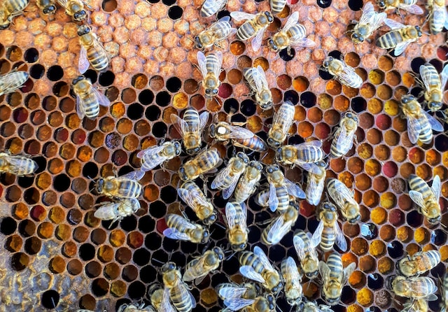
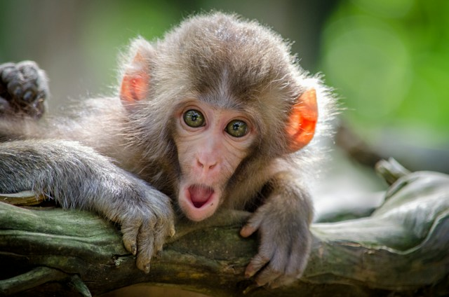

Ciudad prohíbe a los extraterrestres aterrizar sin permiso

En una medida insólita, una ciudad ha promulgado una ordenanza que prohíbe a los extraterrestres aterrizar en su territorio sin obtener previamente un permiso oficial.
Las autoridades locales argumentan que la regulación es necesaria para salvaguardar la seguridad y
prevenir posibles situaciones de riesgo derivadas de encuentros alienígenas inesperados.
Abejas solicitan permisos de vuelo para evitar colisiones con drones

En un esfuerzo por mitigar las colisiones entre abejas y drones, un grupo de apicultores ha propuesto un sistema innovador:
las abejas deberán solicitar permisos de vuelo antes de salir de sus colmenas.
La iniciativa busca proteger a estos polinizadores cruciales y evitar interferencias no deseadas con la creciente presencia de drones en el espacio aéreo.
Investigadores descubren que las cabras entienden expresiones humanas
Un estudio revelador ha demostrado que las cabras poseen una sorprendente capacidad para entender las expresiones faciales humanas.
Los investigadores sugieren que este hallazgo podría tener implicaciones en
la forma en que interactuamos con estos animales y comprender mejor su comportamiento social.
Pingüinos en la Antártida solicitan clases de baile
En una situación inusual, un grupo de pingüinos en la Antártida ha sido observado solicitando clases de baile.
Los científicos que estudian estas aves notaron comportamientos coordinados que se asemejan a patrones de danza,
lo que ha llevado a la idea de que los pingüinos podrían tener una forma de expresión artística única.
Lanzan juego de realidad virtual para gatos

Una empresa de tecnología ha lanzado un juego de realidad virtual diseñado específicamente para entretener a los gatos.
Con entornos interactivos y objetos digitales que capturan la atención felina,
este nuevo producto busca brindar una experiencia de juego única para los dueños de gatos que buscan estimular la mente de sus mascotas.
Escuela de peces obtiene certificación en natación sincronizada

En un proyecto innovador, un grupo de biólogos marinos ha entrenado a un banco de peces en técnicas de natación sincronizada,
y la escuela de peces ha obtenido una certificación en esta disciplina. Este logro no solo destaca la capacidad de los peces
para aprender comportamientos coordinados, sino que también ha capturado la atención de la comunidad científica.
Monos en un zoológico se obsesionan con el juego de espejos

En un zoológico, un grupo de monos ha desarrollado una obsesión sorprendente con un juego de espejos colocado en su recinto.
Los simios pasan horas interactuando con sus propias reflexiones,
lo que ha llevado a los cuidadores a estudiar el comportamiento de estos animales en respuesta a su propia imagen reflejada.
Empresa lanza almohadas con sonidos de ronquidos para ayudar a dormir

En un intento poco convencional de abordar el problema del insomnio, una empresa ha lanzado almohadas que emiten sonidos de ronquidos.
La idea es crear un ambiente sonoro relajante para aquellos que tienen dificultades para conciliar el sueño,
utilizando la aparente paradoja de que los ronquidos puedan facilitar el descanso.